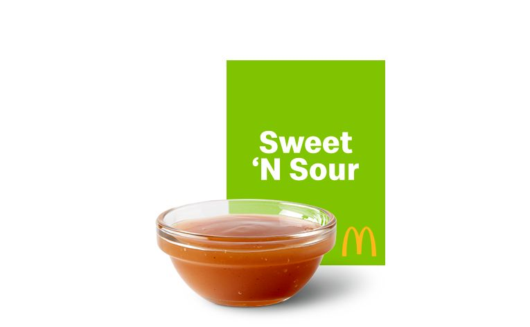

McDonald's Sweet and Sour Sauce

Ingredients
- 1/4 cup of apricot preserve
- 1/4 cup of peach preserve as well
- 2 tablespoons of corn syrup
- 5 teaspoons of white vinegar
- 1/2 spoon soy sauce
- 1/2 spoon mustard
- 1/4 teaspoon of salt
- 1/8 teaspoon garlic
- 1 and 1/2 teaspoon cornstarch
Steps
- Mix all Ingredients and put in a sauce pan
- Add 2 tablespoons of water and let it simmer for 5 mins
- Yo got sweet and sour sauce